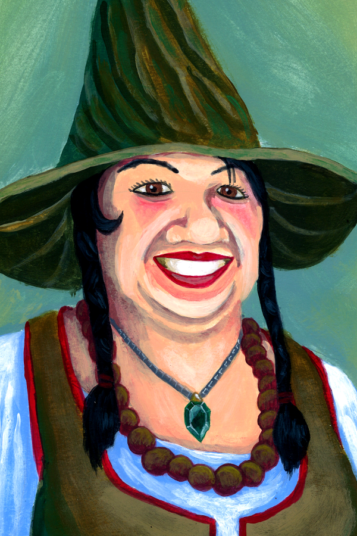

Sylvara Thornwood
Wood Elf · Druid 3 · Circle of the Moon · Hermit
"I have lived in the woods long enough to know: everything that grows will eventually change shape."
AC = Hide armour (12+2 DEX) + wooden shield (2). Druids cannot wear metal armour or use metal shields.
Saving Throws
- Strength+0
- Dexterity+3
- Constitution+1
- Intelligence+3
- Wisdom+5
- Charisma−1
Skills
- Arcana (INT)+1
- Athletics (STR)+0
- History (INT)+1
- Insight (WIS)+3
- Medicine (WIS)+5
- Nature (INT)+3
- Perception (WIS)+5
- Religion (INT)+3
- Stealth (DEX)+3
- Survival (WIS)+5
Attacks
| Weapon / Spell | To Hit | Damage | Notes |
|---|
| Shillelagh | +5 | 1d8+3 bludgeoning | Cantrip (BA to activate); uses WIS |
| Thorn Whip | +5 | 1d6 piercing | Cantrip; pulls target 10 ft if Large or smaller |
| Bear Claws (Wild) | +6 | 2d6+4 slashing | Brown Bear Wild Shape (see below) |
Equipment
- Quarterstaff (activate Shillelagh cantrip as bonus action)
- Wooden shield
- Hide armour
- Druidic focus (sprig of mistletoe)
- Herbalism kit
- Hermit's scroll case with nature notes
- 10 gp
Racial Traits (Wood Elf)
Darkvision 60 ft. Keen Senses: Perception proficiency. Fey Ancestry: advantage vs charm, can't be magically put to sleep. Mask of the Wild: can hide when lightly obscured by natural phenomena. Speed 35 ft.
Class Features
Wild Shape2 / Short or Long Rest
Circle of the Moon: use a bonus action (instead of a full action) to transform. You can transform into any beast of CR 1 or lower that you've seen. You retain your INT, WIS, and CHA. You use the beast's HP — when you drop to 0 HP in beast form, you revert to your normal form with whatever HP you had before transforming. Your equipment falls to the ground or melds into the form (your choice).
New player tip: Transform into a Brown Bear at the start of combat. You effectively get 34 extra HP before risking your own. When you revert, you're back to your normal 21 HP minus whatever you had before you transformed.
Combat Wild Shape HealingCircle of the Moon
While in beast form, you can expend a spell slot as a bonus action to regain 1d8 HP per spell level (so a 2nd-level slot = 2d8 HP regained to your beast form).
Brown Bear — Wild Shape Stat Block
Brown Bear
Large Beast · CR 1 · Wild Shape (uses your bonus action, costs 1 use)
HP 34
AC 11
Speed 40 ft / climb 30 ft
STR 19 (+4)
DEX 10 (+0)
CON 16 (+3)
Multiattack. Two attacks: one Bite and one Claw.
Claw. +6 to hit, 2d6+4 slashing.
Bite. +6 to hit, 2d8+4 piercing.
Keen Smell. Advantage on Perception checks that rely on smell.
Spells
Spellcasting: WIS mod (+3). Spell save DC 13. Spell attack +5. Recover all slots on long rest. Prepare 6 spells each long rest (WIS mod + druid level).
Cantrips
- CantripShillelagh — Bonus action; your quarterstaff attacks use WIS (+5) instead of STR for 1 min. Damage becomes 1d8+3. A martial cantrip.
- CantripThorn Whip — +5 ranged; 1d6 piercing; if Large or smaller, you pull the target 10 ft toward you. Range 30 ft.
Prepared Spells (choose 6)
- 1stHealing Word — Bonus action; 1d4+3 HP healed, range 60 ft. Best healer action-economy in the game.
- 1stCure Wounds — Touch; 1d8+3 HP. For bigger heals when action economy isn't a concern.
- 1stEntangle — STR save DC 13; 20 ft square of difficult terrain, creatures restrained if they fail (concentration, 1 min).
- 1stThunderwave — CON save DC 13; 2d8 thunder in 15 ft cube; pushed 10 ft on fail. Good escape tool.
- 2ndMoonbeam — 5 ft cylinder, 40 ft tall; CON save DC 13, 2d10 radiant each turn; shapechangers have disadvantage (concentration, 1 min). Move it 60 ft as bonus action each turn.
- 2ndPass Without Trace — Concentration, 1 hr; +10 to Stealth checks and you can't be tracked by nonmagical means for everyone in 30 ft.
Tip: Open combat in Brown Bear form to absorb damage. When the beast form drops, cast Moonbeam or Entangle with your remaining actions to control the battlefield.
Once Per Long Rest · Character Quirk
Local Gossip
You spend one minute conversing with whatever small animals or insects are nearby — birds, squirrels, beetles, a suspiciously attentive crow. They always have opinions. You learn one piece of local information that a small creature would plausibly know: recent foot traffic, an unusual smell, a good hiding spot, a sound in the night, or a dangerous area nearby. The quality of the tip varies with the quality of the animal. The crow is usually the most useful. The crow knows it.
Personality
Trait
I am blunt. I say exactly what I mean, even when it isn't what others want to hear.
Ideal
Balance. Nature thrives when predator and prey keep each other in check — so do people.
Bond
A grove I tended was destroyed by loggers while I was away. I will not let that happen to another sacred place.
Flaw
I have little patience for the pace of civilised life. I assume most problems can be solved by someone charging in bear form.
Portrait: Joseph Hewitt · CC-BY 4.0